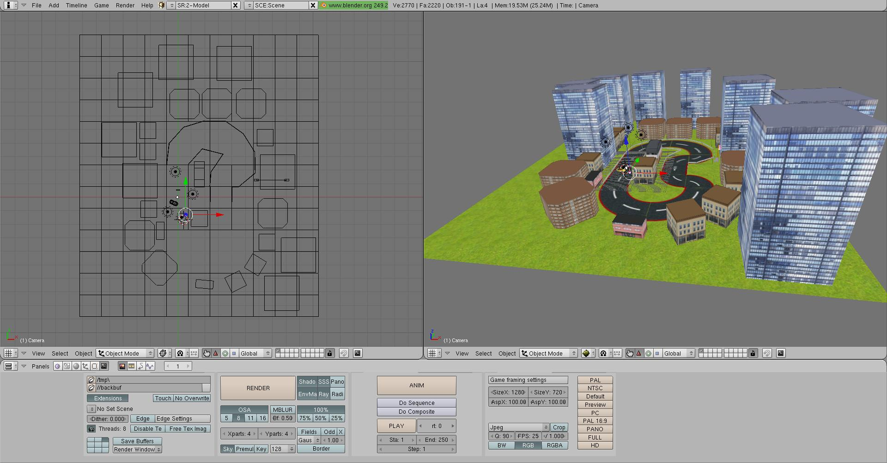

Lots of stuff has happened since I last posted something here. Crazy Eramus life, you want to do everything: projects, social life, studying… So, logically, the blog has been a little bit left behind. I just wanted to post a quick update about the two university projects I’ve been working on recently:
Laterdroid: Read it Later client for Android created using the official SDK.
Urban Race: time attack racing game developed using C# and the XNA framework.
For further information please go to each project’s page, you"ll find a more detailed description, screenshots, videos and download links. I was thinking of making both projects open source and upload them to a Google Code repository but I guess that"ll have to wait until they"re graded by the professors.
And now for something completely different…
Huge events have taken place recently, the dream has come true. Unfortunately, I can’t make anything public yet, I’ve only told my family and friends. However, I"ll soon post something on that matter.
As if I didn’t have enough work, I recently started another project which has an early deadline. For the Advanced Games Programming module here at Kingston University we have to develop a game for Windows and Xbox 360 using C# and the XNA framework. The final deadline was in a month counting from the start date and, halfway through the development, we had to show a demo. That’s how Urban Race began just a week ago, in this post I"ll talk about the game and my first impressions on XNA.
Pitching Urban Race
Urban Race is a time attack racing game set in several tracks within a city environment. The player has to drive through the track collecting time bonuses so he can reach the goal before the time expires.
The controls are extremely simple: using the arrow keys you can accelerate, brake and steer the car. I haven’t though about the controls in Xbox 360 yet but they"ll be similar to those in every racing game in that console.
XNA first impressions
It’s really easy to criticize everything M$ does but I have to admit that XNA is a fine games development framework and it’s specially well integrated within Visual Studio. 7 days ago I didn’t know anything about C# (although I knew Java and C++) nor XNA itself and I’ve managed to get lots of stuff done: game objects model, Blender level loading, collision detection and basic response, games states management, etc.
Speaking of framework specific matters, I have to say that the API is very friendly although it lacks some essential features. It would be nice if it had scene graph management, dynamic shadows or a proper animation module. All of that seems quite essential for a high level games development framework but it’s not built in. Apart from that, it’s surprisingly easy how much you can achieve in so little time with, initially, a total lack of knowledge.
However, I"m fairly happy with it and its integration with Visual Studio. I"m not talking only about the excellent auto-complete or syntax checking features but the content pipeline management. Every game asset is controlled by Visual Studio, being the IDE responsible of binary exporting and reference checking. When you run your game it tells you which non existing asset are you trying to load. At first, relying on Visual Studio being in control of your assets might be a little uncomfortable and dangerous (and it is) but in the end it’s been a good thing for me.

Tools for the trade
Here is a list of tools I’ve been using to create my game:
Visual Studio: IDE (the only option in this case).
Blender: open source 3D modelling, texturing and animation tool. I’ve used it as my level editor as well exporting to the Dotscene xml format.
The Gimp: open source 2D graphic tool that I’ve used for texturing my models.
Inkscape: open source 2D vector tool which I’ve used to design my track’s pieces since they needed to be geometrically exact so they could fit together.
Fraps: recording my game running.
Video after 7 days of work
I created a video showing the development progress in Urban Race after 7 days of work. You can see the crappy physics and camera behavior (none of those are final) among other features such as level loading or collision detection.
Just a quick update: Sony has released moveme, an official and open source PlayStation Move API that enables developers to create Windows and Linux applications controlled using Sony’s famous wand. You can read more about the library in the following paragraphs.
They have published a C/C++ version and a C# one. Within the Google Code repository you can find the sources for all the versions, some sample programs and a brief but accessible documentation. This small API provides functions to connect with several PlayStation Move controllers; to get the wand’s info such as position, orientation or button presses and even to manage rumble effects. It looks like Sony has published the library the proper way.
It’s surprising that such a secretive company like Sony publishes a library to work with their proprietary controller. However, given the unofficial Kinect SDK situation, it’s certainly more desirable providing your own version before the unofficial one comes around. Furthermore, no one can deny that Kinect SDK has given Microsoft’s device more popularity across the Net.
It’s a pity that I don’t own one of these controllers. Otherwise I could maybe create a Move compatible version of Sion Tower. Who knows?
I’ve just finished this simple flocking behavior demo based on the 3 Reynolds rules: separation, cohesion and alignment. It was part of a coursework for the Strategy & Intelligent Games module I"m taking here in Kingston University. I know it’s not precisely pretty but at least the boids are moving in a nice way. It’s written in C++ using the despicable Open Scene Graph library (such an uncomfortable API).
Features:
3 Reynolds rules: separation, cohesion and alignment.
Collision avoidance.
User interaction: dynamic mouse seeking or avoidance.
Steering behaviors blending.
Configurable parameters using an XML options file.
Most of the algorithms have been extracted from the Artificial Intelligence for Games book written by Ian Millington and John Funge. If you"re interested in the topic it’s totally a must read, I strongly recommend it.
I’ve been working quite hard in Evolve, the PSP First Person Shooter prototype I"m developing for the Advanced Games Programming module here at Kingston University. The submission deadline is getting dangerously closer and I’ve had to crunch a little bit to get the basic features I wanted to include and be able to write a report on the game. In the following lines I"ll give my impressions on the development and at the bottom you"ll find a doubtful quality trailer.
The game looks awful, has several known bugs and needs some performance tweaks. However, note that I’ve only had a month and a half of development time. Furthermore, the whole PSP official SDK was completely new to me and I’ve had to divide my time between coding and creating the assets (the cute dog enemy was pre-made).
Nevertheless, the system is fairly extensible. One of the things I"m proud of is the Blender level exporting which works fairly well. Only a couple features were requisites for passing the coursework and many more have been implemented, so it’s been a positive exercise. I’ve learned lots of things about developing for small devices and time management. You can watch the lame video just below this.